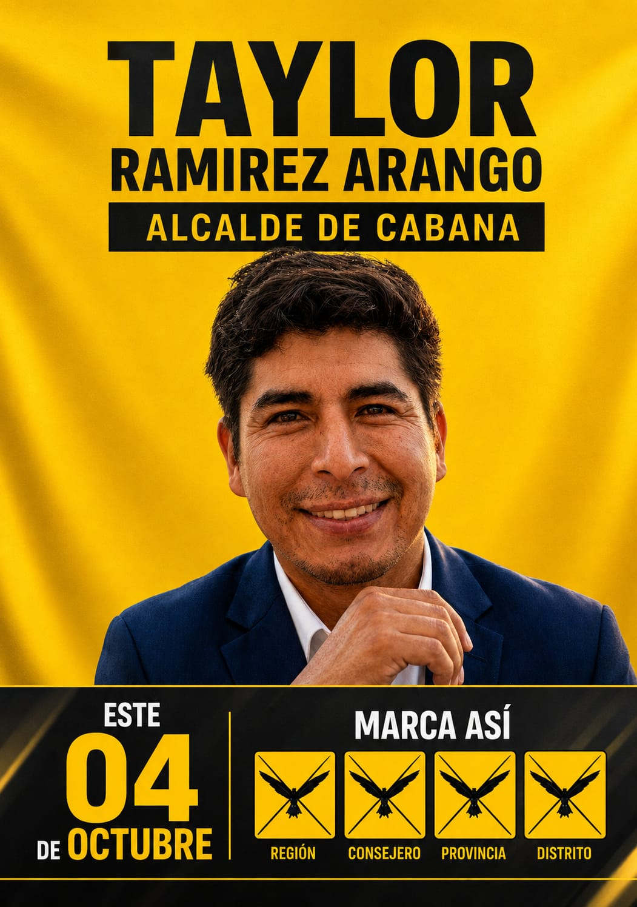

Turismo de Aventura
Impulso del Canopy, Bungee de catapulta y Ciclismo de Alta Montaña para dinamizar la economía local.

Recuperemos Cabana & Sondondo, juntos
Impulso del Canopy, Bungee de catapulta y Ciclismo de Alta Montaña para dinamizar la economía local.
Posicionamiento de la Marca "Guerraspampa" y puesta en valor de nuestra mítica Danza de Tijeras.
Creación del Mercado Central del Valle de Sondondo y desarrollo de la cadena productiva de fibra de alpaca.